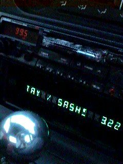
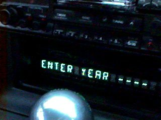

First of all: a disclaimer. Basically, all this worked for me. If it doesn't work for you, burns down your house/car/household pet, that's your problem. People building PSUs, it's a good idea to test them (voltage, current, etc) under load (eg: a partially dead hard disk) before plugging in an expensive PC motherboard which it may well blow up.
For those of you looking for a complete, built, in-dash player should look at my empeg unit (http://www.empeg.com which is very cute ;)
As this page is getting pretty big now, here's an index:
The final result is immensely wonderful, and impresses the hell out of most hackerish people (like me). Non-computer people just wonder why you havn't got a CD player. But, with my setup (based on RedHat Linux 5.0) I can do these things:
Future plans include:
...and yes, I own all the CDs that the music on the system has been
compressed from. Below you see the ridiculous looking exclaimation mark
on the VFD display :-)

And if you type *2, you get a random play of tunes from the year you
enter (via the ID3 year tag). Very 'golden year', isn't it?

Quite soon, I found the Advantech PCM-5862 'biscuit PC'. This board puts an entire Pentium PC (including: 2 72-pin SIMM sockets, Socket7 (to 200Mhz), 10-base-T Ethernet, 16-bit audio, 2xUSB, EIDE, Floppy, 4xSerial, Parallel, PCI slot, PC/104 slot, SVGA with monitor and LCD drive) into the footprint of a 5.25" disk drive - and best of all, runs from a single +5v supply. I found an importer, found out the price (urk, not cheap - I paid 293+VAT from UCS in the UK), screamed a bit, then bought it anyway: it's still cheaper than an autochanger...
Next was a CPU - I didn't need anything powerful, and ended up with a secondhand Cyrix P150: this is actually fairly marginal for mp3 decoding - I'd underestimated how bad the FPU is in those things when compared to a genuine Intel. It soon got replaced by a P166MMX (see below).
The hard disk I chose was a Hitachi 2.1Gb 2.5" laptop drive - after much umming and aaahing, I decided to go for a 2.5" even though the capacity was way down on what I could get for the same price in 3.5". Basically, the Hitachi drive could withstand operating shock of 100G (300G non-operating), and ran off a teensy little 0.5A at +5v. The Adavantech board's EIDE is on a 2.5" drive connector anyway, so attaching it was no problem. I had thought of using a small HDD and a 5-CD EIDE changer, but the fact that most CD-ROMs nowadays are incredibly plasticky put me off somewhat.
As the Advantech manual notes, if you give it a +12v supply to the board, you get higher quality audio (it isolates the analogue audio bits from the switching noise of the logic circuitry), so I put on a SGS-Thompson L4940V12 (Farnell code 413-197), 12v low-drop-out (LDO) regulator, to give me a maximum of 1.5A at 12v - might be useful if I ever fit a CD-ROM...
If you're building the PSU: please note that everything needs to be bolted to a heatsink - this means the 4970, the 4940 and the 1545 Schottky diode used in the 4970 circuit. However, the heatsink tag on the 1545 is NOT GROUND and needs an insulator so that it isn't connected to case ground otherwise things will go bang - these are easily available from electronics suppliers. I suggest you check it with a multimeter before powering it up!
UPDATE! I've just (4th September 1998) replaced the 5v PSU with a better part. See the news section for details.
For input power, I used a Neutrik speaker connector (Speakon) which will pass an ungodly amount of amps, and as a side-effect both looks cool and has the most addictive push-and-twist to lock docking motion of any connector I've ever used :-) It's also got 4 poles, which is useful for the ignition sense (see below).
The hard disk is mounted hanging from the lid of the computer's box in a small cradle, slightly shock mounted on little rubber gromits, and mounted the right way up (it'd have been a lot easier to put it upsidedown, but I was a bit nervous about that!).
Some pictures of inside/outside of the unit can be found here.
The other problem was that car batteries are usually about 12v, but can be below this with the engine off (with it on, they're usually about 14v) - this wasn't really a problem, as I didn't plan to listen to music with the engine off much, anyway. The problem was to ensure the machine got powered off reliably, and after it was shut down properly (it runs RedHat Linux 5.0) - so, a PIC16LC84 was bought and I breadboarded a little power control circuit.
Basically, this circuit does two things:
When you get into the car and want music, you just hit any key on the keypad: if the ignition is on, it powers up the PC, and then sends any keypresses to COM1 as ASCII (0-9, * & #). If the PC is on and the car engine is switched off, the PIC notices this, and sends '!' to the PC on COM1 every second for 30 seconds, then turns off the PC power supply: the PC takes about 15-20 seconds to complete a /sbin/halt, so that works out nicely. Update! someone built this circuit, progammed my code, then couldn't get it working... I forgot to mention that now you have to type "123" in sequence to start the main computer - I changed this from any key to prevent accidental powerups.
The PIC binary (in intel hex format) is here: remember to set the correct options before programming the pic - I use an XT oscillator, watchdog timer off, boot timer on. I've not included the source as some of it was from the PIC C compiler examples which are copyright (and also, this requires you to have the PIC C compiler!). The pinout is as follows:
A0, serial tx (to pc, via MAX232)
A1, serial rx (from pc, via MAX232 - not used as yet)
A2, ignition sense (high=on, take ignition line through a 10k resistor
to this pin, with a 5.1v Zener pointing UP from ground to this pin to limit
the voltage)
A3, pc power control (high=on, this goes directly to the high-side
driver)
A4, pc reset (low=reset, this generates a small reset pulse a second
after powering the PC on: it's not actually used as the Advantech resets
OK).
B0, keypad column 1 (Pulled to 5v via a 10k resistor)
B1, keypad column 2 (Pulled to 5v via a 10k resistor)
B2, keypad column 3 (Pulled to 5v via a 10k resistor)
B3, keypad row 1 (Pulled to 5v via a 10k resistor)
B4, keypad row 2 (Pulled to 5v via a 10k resistor)
B5, keypad row 3 (Pulled to 5v via a 10k resistor)
B6, keypad row 4 (Pulled to 5v via a 10k resistor)
The display was hooked up to the low 3 bits of the PC's parallel port and I worked out the command set (having drawn a blank on finding programming data on the OKI 1937 VFD driver on internet) - the display can be dimmed and you can set the cursor position, basically. There are some other bits I havn't worked out which seem to give super-bright, but I can't repeat the results reliably! I had thought of using a PIC to drive the display from a standard COM port, but the protocol is so simple and with only 16 characters to refresh a 'hit the hardware' approach doesn't munch too much Linux CPU time.
Both the display and keypad come out on a single 25-way D type, allowing me to unplug everything easily when I want to take the PC inside: soon, I won't be able to do this, as I'll have bolted down the plate which covers the access to the duct - but I'm not doing this until I'm sure I can deal with it not fsck'ing properly without removing the machine!
The audio comes out on two poncy gold-plated (99p each) phonos on the outside of the case.
Currently, the software's pretty basic. On boot, it loads a pre-compiled ID3 database (this can be rebuilt using *8). I can then select tunes by year, random play, play group, artist, and so on, using a simple back/forward/select mechanism from the keypad (unfortunately, the keypad doesn't have the ABC, DEF, and so on printed on the keys like a phone, which would have helped a lot...). I can mute the tune with #, pause, restart, skip forward and back and so on - it's great!
The display by default shows the artist & title (scrolling in a 12 character field), one space, and then M.SS (the dot takes no space, as it gets turned on in the M segment's display) - * goes into command mode, allowing you to pick functions 0-9 (or * to return to play mode). *1 is artist select, *2 is year select, *8 does a rescan of the filesystem/rebuild of the ID3 database, and *9 will do a shutdown if you need to shutdown without turning the ignition off. At any point I can key 9 to build a random playlist: eg: *19 builds a random playlist of everything in the database, *1 (then select an artist) #9 gives me random play of tunes from that artist, and so on.
People have asked for source for various bits of the system: below are some snippets that should help people doing the same sort of things. Please note that this is quick-hack code, so don't expect prettyness/whatever. It just works. Also, please don't mail me if you have no idea how to do anything with these files: I've not got time to teach people programming, these are just bits to point people in the right direction (or at least a direction).
TV appearance online - Benjamin Bayliss kindly Vivo-encoded the main
bit of the MP3mobile's TV appearance: you don't get to see it playing in this
clip, but you get to see where it goes in the car...
click here (you need a Vivo player).
Power supplies available commercially Someone is making MAX787-based power supplies and selling them here, along with their own in-car MP3 player. I've not seen one of these PSUs, but it's an idea for those of who averse to soldering!
Ashis Vaidya's amp (automobile mpeg player)
Another in-car player, this time using DOS and a parallel-port interfaced LCD (plus numeric-keypad in ps/2 compatible form).
See here
empeg website is up!
Finally, the empeg website is up: info on the commercial player can be found there, plus registration to reserve your place in the queue.
PaulB's CAJUN audio jukebox
Paul's just mailed me about his jukebox project, which uses more off-the-shelf PC bits (for those without too much soldering ambition) but has a bigger display, an onboard radio, and it looks really neat. Of course, he runs Linux too :-)
Take a look: here
General updates
I've gone through the page and added Farnell order codes for parts as appropriate. Farnell trade almost everywhere and you can get pricings in your local currency from www.farnell.com
New power supply
The original 5v PSU documented above wasn't going too well. At times (for example, after a long journey (when the PSU was hot) and the headlights and fan were on) I'd get dropouts in the music: the display kept scrolling, but the music stopped. This turned out to be the 5v rail drooping enough to cause the HDD to spin-down, although the PC was unaffected (remembering that the CPU runs on 2.9v, a droop in the +5v rail doesn't affect it too much).
So, I upgraded the PSU. As now (unlike when I started the project) I knew that 5A at 5v was sufficient, I tracked down a different switch-mode PSU chip, the Maxim MAX787 (Farnell order code 787-530). Again, using the example circuit in the datasheet (see Maxim's website & download the .pdf), this was built up and worked perfectly. Unlike the L4970A, the MAX787 is fine down to input voltages of 8v, which means that the battery would have to be completely dead for the computer not to work correctly - and also, it needs almost no external components: big electrolytics on the input and output, a timing capacitor and resistor, the inductor (50uH this time - I used a 47uH - Farnell code 482-572) and a MBR745 (Farnell code 364-230). Note that like the 1545 in the old PSU, the heatsink mounting point on this diode is NOT GROUND and will need a mica spacer and other bits to insulate it - although the MAX787 is short-circuit protected, so if it shorts you won't blow anything up, you'll just get no +5v rail.
This setup runs much cooler - on the old one, the heat from the 4970 was major, even after only 30 seconds, whereas the 787 runs warm as opposed to hot. You'll still need a heatsink, though. I rescued the old L4940V12 (Farnell code 413-197) from the old PSU and reused it, as I'd had no problems with this.
One other thing: my system takes less than 5A. If you use a higher voltage processor (eg: non-MMX pentium, Cyrix, etc) then you'll probably need a heftier supply, or possibly two of these in parallel. The MAX787 has a current limiter set at 6.5A, so you shouldn't fry anything by mistake, but be careful. Remember there will be a current peak when turning the think on (eg: Inrush and HDD spinup) so it's only the "operational" current you have to get worried about.
TV appearance
Yes, the mp3mobile is going to be on TV! Yesterday, Dave Green from the '404 not found' programme on [.tv], Sky's new computer channel, came round and filmed me, the car, and the mp3mobile. Hopefully, it should be on in a couple of weeks - I'll give more info when I have it - 404 not found is shown on Tuesday nights at 7pm UK-time. Tuning information: Astra 1D satellite, 10.847GHz, Vertical polarisation. [.tv] only broadcast from 6pm, so before that you get some Granada channel...
No idea on encryption and that sort of stuff, it might be in the clear: would someone from Europe tell me if [.tv] is encrypted? I know it's part of the free Sky package, but I don't know if that means it's encrypted or not...
Commercial version update
Things are going well: we've got the PCBs for the production prototype
back about a week ago, and Patrick surface-mounted everything by hand (brave
man...) and it worked! It's a totally sexy 6-layer PCB, measuring only
6"x5", and can support up to 16Gb of disk :-). I'm currently working on
the low-level firmware for the unit, then Linux will be fiddled with and
plonked onto it. More news, a mailing to the announcement list, and www.empeg.com's
opening will come shortly!
Commercial version & other bits
The commercial version is going nicely, with the first production prototype PCB about to be sent off to the PCB-producers. Some of the highlights: same size as a euro car stereo (Blaupunkt, Pioneer, etc), graphic display, IR remote, IrDA on the front panel for Palmpilot (etc) interface, USB, RDS/RBDS FM tuner, high-speed serial for those without USB... and more. Still runs linux, too :-)
When we've got it in its box, www.empeg.com will go up with pictures and so on, and there will be a mailing to the annoucement list.
Completely separately, someone has mailed me who hasn't had time to
complete their own MP3mobile project and wants to sell their bits:
He wants $450 for the above, and also has a laptop drive for sale.
If you're interested, mail him (removed - now sold - thanks!)
For those of you who want to help, I'm in the rc5@ant.org (Team 553) team, so join it & help us! Distributed.net are (unsuprisingly) at www.distributed.net.
The problem was traced to the board deciding it was now not interested in running at anything below 166Mhz: when in Paris I tried running it slower (incase it was a PSU fault and reducing the current might help) but didn't think of running it faster! (and it worked fine from then...). Since then, someone who looked at the Intel datasheets said that the MMX chips don't like running at <166Mhz, as no slower variants were every made. Hmm. Strange it didn't even work at 150Mhz, but there you go...
Source and stuff
I've put up some bits of UNIX source and the PIC object code, and updated
some bits on the PSU page.
Hugo
Page first created 8th April 1998
Last modified 8th April 1999 (woo! first anniversary!)